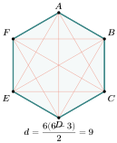
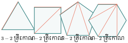
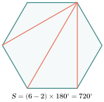
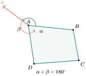
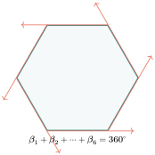
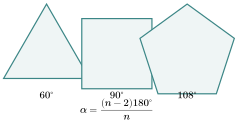
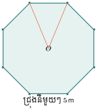

វត្ថុបំណង
- កំណត់មុំនិងជ្រុងនៃពហុកោណប៉ោង
- រកផលបូកមុំក្នុងនិង មុំក្រៅពហុកោណ
- រករង្វាស់មុំនៃពហុកោណនិយ័ត ។
1. និយមន័យ
ពហុកោណជាផ្នែកមួយនៃប្លង់ខណ្ឌដោយខ្សែបាក់បិទជិត ។
ពហុកោណប៉ោង ពហុកោណផត
ចំពោះពីរករណីនេះ យើងសិក្សាតែពហុកោណប៉ោង ។ គេឱ្យឈ្មោះពហុកោណទៅតាមចំនួនជ្រុងរបស់វា ។
| ឈ្មោះ ពហុកោណ | រូប | ចំនួនជ្រុង |
| ត្រីកោណ | 3 | |
| ចតុកោណ | 4 | |
| បញ្ចកោណ | 5 | |
| ឆកោណ | 6 |
លំហាត់គំរូទី 1 : ចូររាប់ចំនួនមុំនិងចំនួនជ្រុងនៃពហុកោណតាមរូបខាងក្រោម ។
ចម្លើយ :
| រូប | ចំនួនជ្រុង | ចំនួនមុំ |
| 7 | 7 | |
| 8 | 8 | |
| 9 | 9 |
លំហាត់គំរូទី 2 : ចូរប្រាប់ចំនួនជ្រុងនិងអង្កត់ទ្រូងនៃពហុកោណរូបខាងស្តាំ ។

ចម្លើយ : ពហុកោណមានជ្រុងទាំងអស់ 6 ហើយមានអង្កត់ទ្រូងចំនួន 9 ។
ចំណាំ : អង្កត់ទ្រូងពហុកោណជាអង្កត់ភ្ជាប់កំពូលពីរមិនជាប់គ្នា ។
ប្រតិបត្តិ : គេមាន 8 ចំណុចដែលមិនស្ថិតនៅលើបន្ទាត់តែមួយនិងមិនត្រួតស៊ីគ្នា ។ ចូរភ្ជាប់ចំណុចទាំងនោះរួចប្រាប់ចំនួន ជ្រុងនិងអង្កត់ទ្រូង ។
2. ផលបូកមុំក្នុងនៃពហុកោណ
យើងដឹងថាផលបូកមុំក្នុងត្រីកោណស្មើនឹង \(\displaystyle 180^\circ\) ហេតុនេះ ដើម្បីគណនាផលបូកមុំក្នុងពហុកោណគេត្រូវភ្ជាប់អង្កត់ទ្រូងដើម្បីខណ្ឌចែកពហុកោណជាត្រីកោណ ។
ខាងក្រោមនេះជារបៀបរាប់ចំនួនត្រីកោណក្នុងពហុកោណ ។
ជ្រុង 4 កំណត់បានត្រីកោណ 2
ជ្រុង 5 កំណត់បានត្រីកោណ 3

ជ្រុង 6 កំណត់បានត្រីកោណ 4
ដូចនេះ ពហុកោណមួយដែលមាន \(\displaystyle n\) ជ្រុងអាចមាន \(\displaystyle (n-2)\) ត្រីកោណ ។ ដោយក្នុងត្រីកោណមួយមានផលបូករង្វាស់មុំក្នុងស្មើនឹង \(\displaystyle 180^\circ\) នាំឱ្យពហុកោណដែលមាន \(\displaystyle n\) ជ្រុងមានផលបូករង្វាស់មុំក្នុងស្មើនឹង \(\displaystyle (n-2) \cdot 180^\circ\) ។
ឧទាហរណ៍ទី 4 : ផលបូកមុំក្នុងនៃ
- ត្រីកោណ \(\displaystyle (3-2) \times 180^\circ = 180^\circ\)
- ចតុកោណ \(\displaystyle (4-2) \times 180^\circ = 360^\circ\)
- បញ្ចកោណ \(\displaystyle (5-2) \times 180^\circ = 540^\circ\)
- ឆកោណ \(\displaystyle (6-2) \times 180^\circ = 720^\circ\)
- អដ្ឋកោណ \(\displaystyle (8-2) \times 180^\circ = 1080^\circ\) ។
និយមន័យ : ផលបូករង្វាស់មុំក្នុងនៃពហុកោណមួយដែលមាន \(\displaystyle n\) ជ្រុងស្មើនឹង \(\displaystyle (n-2) \times 180^\circ\)
លំហាត់គំរូទី 1 : ចូរគណនាផលបូករង្វាស់មុំក្នុងនៃពហុកោណតាមរូបខាងស្តាំ ។

ចម្លើយ : ពហុកោណនេះជាឆកោណគឺ \(\displaystyle n = 6\) តាមរូបមន្តនៃរង្វាស់មុំក្នុង
ដូចនេះ ឆកោណមានផលបូករង្វាស់មុំក្នុងស្មើនឹង \(\displaystyle 720^\circ\) ។
លំហាត់គំរូទី 2 : ចូរប្រាប់ឈ្មោះនិងគូសរូបពហុកោណមួយដែលមានផលបូករង្វាស់មុំក្នុងស្មើនឹង \(\displaystyle 1080^\circ\) ។
ចម្លើយ : តាមរូបមន្តនៃរង្វាស់មុំក្នុង \(\displaystyle (n-2) \times 180^\circ\) យើងបាន \(\displaystyle 1080^\circ = (n-2) \times 180^\circ\) នាំឱ្យ
ដូចនេះ ពហុកោណនេះមានជ្រុង 8 មានឈ្មោះអដ្ឋកោណ ។
លំហាត់គំរូទី 3 : ចូររកផលបូករង្វាស់មុំក្នុងនៃពហុកោណដែលមានជ្រុង : 7 10 12 ។
ចម្លើយ :
រកផលបូករង្វាស់មុំក្នុងនៃពហុកោណដែលមានជ្រុង 7
តាមរូបមន្ត :\[\begin{aligned} (n-2) \times 180^\circ &= (7-2) \times 180^\circ \\ &= 5 \times 180^\circ \\ &= 900^\circ \text{ ។} \end{aligned}\]ដូចនេះ ផលបូករង្វាស់មុំក្នុងនៃពហុកោណដែលមានជ្រុង 7 ស្មើនឹង \(\displaystyle 900^\circ\) ។
រកផលបូករង្វាស់មុំក្នុងនៃពហុកោណដែលមានជ្រុង 10
តាមរូបមន្ត :\[\begin{aligned} (n-2) \times 180^\circ &= (10-2) \times 180^\circ \\ &= 8 \times 180^\circ \\ &= 1440^\circ \text{ ។} \end{aligned}\]ដូចនេះ ផលបូករង្វាស់មុំក្នុងនៃពហុកោណដែលមានជ្រុង 10 ស្មើនឹង \(\displaystyle 1440^\circ\) ។
រកផលបូករង្វាស់មុំក្នុងនៃពហុកោណដែលមានជ្រុង 12
តាមរូបមន្ត :\[\begin{aligned} (n-2) \times 180^\circ &= (12-2) \times 180^\circ \\ &= 10 \times 180^\circ \\ &= 1800^\circ \text{ ។} \end{aligned}\]ដូចនេះ ផលបូករង្វាស់មុំក្នុងនៃពហុកោណដែលមានជ្រុង 12 ស្មើនឹង \(\displaystyle 1800^\circ\) ។
ប្រតិបត្តិ : ចូររកចំនួនជ្រុងនៃពហុកោណដែលមានផលបូករង្វាស់មុំក្នុងស្មើនឹង \(\displaystyle 2700^\circ\) , \(\displaystyle 3420^\circ\) ។
3. ផលបូកមុំក្រៅនៃពហុកោណ
ឧទាហរណ៍ទី 1 : គេឱ្យចតុកោណ \(\displaystyle ABCD\) មួយ (រូបខាងស្តាំ) បើគេបន្លាយអង្កត់ \(\displaystyle DA\) ខាង \(\displaystyle A\) នោះយើងសង្កេតឃើញថាផលបូកមុំក្នុងនិងមុំក្រៅនៅត្រង់កំពូល \(\displaystyle A\) មានរង្វាស់ស្មើនឹង \(\displaystyle \alpha + \beta = 180^\circ\) (ព្រោះ \(\displaystyle DAx\) ជាបន្ទាត់) ។

ឧទាហរណ៍ទី 2 : គេមានពហុកោណមួយដែលមាន \(\displaystyle n\) កំពូល ផលបូករង្វាស់មុំក្នុងនិងផលបូករង្វាស់មុំក្រៅស្មើនឹង \(\displaystyle n \times 180^\circ\) ។ ដោយផលបូករង្វាស់មុំក្នុងមានរង្វាស់ស្មើនឹង \(\displaystyle (n-2) \times 180^\circ\) ផលបូករង្វាស់មុំក្រៅនៃពហុកោណដែលមាន \(\displaystyle n\) ជ្រុងគឺ
ជារួម : ផលបូករង្វាស់មុំក្រៅនៃគ្រប់ពហុកោណប៉ោងមានរង្វាស់ស្មើនឹង \(\displaystyle 360^\circ\) ។
សំគាល់ : ផលបូករង្វាស់មុំក្រៅនេះ មិនអាស្រ័យនឹងចំនួនជ្រុងពហុកោណទេ ។
លំហាត់គំរូទី 1 : បើផលបូករង្វាស់មុំក្នុងស្មើនឹងផលបូករង្វាស់មុំក្រៅ នៃពហុកោណមួយ ។ ចូរប្រាប់ប្រភេទពហុកោណនោះ ។
ចម្លើយ : ប្រភេទពហុកោណ
ដោយផលបូកនៃរង្វាស់មុំក្នុងស្មើនឹងផលបូករង្វាស់មុំក្រៅនៃពហុកោណ
យើងបាន
ដូចនេះ ពហុកោណដែលមានផលបូករង្វាស់មុំក្នុងស្មើនឹងផលបូករង្វាស់មុំក្រៅជាចតុកោណ ។

លំហាត់គំរូទី 2 : បើផលបូករង្វាស់មុំក្នុងស្មើនឹងពីរដងផលបូករង្វាស់មុំក្រៅនៃពហុកោណមួយ ។ ចូរបញ្ជាក់ពីប្រភេទពហុកោណ ។
ចម្លើយ : ប្រភេទពហុកោណ
ដោយផលបូកនៃរង្វាស់មុំក្នុងស្មើនឹងពីរដងនៃផលបូករង្វាស់មុំក្រៅនៃពហុកោណ
យើងបាន
ដូចនេះ ពហុកោណនោះជាឆកោណ ។
លំហាត់គំរូទី 3 : ចូរគណនារង្វាស់មុំ \(\displaystyle x\) នៃពហុកោណខាងស្តាំ ។
ចម្លើយ : គណនារង្វាស់មុំ \(\displaystyle x\)
ដោយផលបូកមុំក្រៅនៃពហុកោណមួយមានរង្វាស់ស្មើនឹង \(\displaystyle 360^\circ\)
គេបាន
ដូចនេះ \(\displaystyle x = 52.5^\circ\) ។
លំហាត់គំរូទី 4 : ចូរគណនាតម្លៃ \(\displaystyle \alpha\) នៃពហុកោណខាងស្តាំ ។
ចម្លើយ : គណនាតម្លៃ \(\displaystyle \alpha\)
ដោយផលបូកមុំក្រៅនៃពហុកោណមួយមានរង្វាស់ស្មើនឹង \(\displaystyle 360^\circ\)
គេបាន
ដូចនេះ \(\displaystyle \alpha = 30^\circ\) ។
ប្រតិបត្តិ : ចូរគណនាតម្លៃ \(\displaystyle \beta\) ក្នុងពហុកោណខាងក្រោម ។
4. រង្វាស់មុំនៃពហុកោណនិយ័ត
ឧទាហរណ៍ទី 1 : គេមានត្រីកោណសម័ង្ស \(\displaystyle ABC\) (ដូចរូបខាងស្តាំ) ។ ដោយត្រីកោណសម័ង្សមានរង្វាស់ជ្រុងទាំងបីប៉ុនគ្នាហើយមានមុំទាំងបីក៏ប៉ុនគ្នាដែរ នោះគេថាត្រីកោណសម័ង្ស \(\displaystyle ABC\) ជាពហុកោណនិយ័ត ។

ឧទាហរណ៍ទី 2 : គេមាន ការេ បញ្ចកោណ និងឆកោណនិយ័តដូចខាងក្រោម ។
យើងសង្កេតឃើញថា ពហុកោណនីមួយៗខាងលើមានមុំទាំងអស់ប៉ុនគ្នា និងជ្រុងទាំងអស់ប៉ុនគ្នាហៅថា ពហុកោណនិយ័ត ។
ឧទាហរណ៍ទី 3 : រង្វាស់មុំក្នុងនៃត្រីកោណសម័ង្សមួយស្មើនឹង \(\displaystyle \frac{(3-2)180^\circ}{3} = 60^\circ\) (ពីព្រោះផលបូកមុំក្នុងនៃពហុកោណស្មើនឹង \(\displaystyle (n-2)180^\circ\)) ។
ជារួម :
លំហាត់គំរូទី 1 : ចូររករង្វាស់មុំក្នុងនីមួយៗនៃការេ ។
ចម្លើយ : រង្វាស់មុំក្នុងមួយៗនៃការេគឺ
ដូចនេះ រង្វាស់មុំក្នុងនីមួយៗនៃការេគឺ \(\displaystyle 90^\circ\) ។
លំហាត់គំរូទី 2 : ចូររករង្វាស់មុំក្នុងនីមួយៗនៃអដ្ឋកោណនិយ័ត ។
ចម្លើយ : រង្វាស់មុំក្នុងនីមួយៗនៃអដ្ឋកោណនិយ័តគឺ
ដូចនេះ រង្វាស់មុំក្នុងនីមួយៗនៃអដ្ឋកោណនិយ័ត \(\displaystyle \alpha = 135^\circ\) ។
ប្រតិបត្តិ : ហេតុអ្វីបានជាចតុកោណកែង និងចតុកោណស្មើមិនមែនជាពហុកោណនិយ័ត ? ចូរបញ្ជាក់ ?
លំហាត់
- ចូរគណនាផលបូករង្វាស់មុំក្នុងនៃពហុកោណដែលមានជ្រុង 7 8 9 10 និង 12 ។
- ចូររកចំនួនជ្រុងនៃពហុកោណដែលមានផលបូករង្វាស់មុំក្នុងស្មើនឹង \(\displaystyle 1800^\circ\) , \(\displaystyle 2700^\circ\) និង \(\displaystyle 4860^\circ\) ។
- តើមានពហុកោណណាដែលមានផលបូករង្វាស់មុំក្នុងស្មើនឹង \(\displaystyle 5130^\circ\) ដែរឬទេ ?
- នៅពេលគេធ្វើការគណនាផលបូករង្វាស់មុំក្នុងនៃពហុកោណប៉ោងមួយដែលមានរង្វាស់ស្មើនឹង \(\displaystyle 540^\circ\) តើពហុកោណប៉ោងនោះមានជ្រុងប៉ុន្មាន ?
- ចូររកតម្លៃ \(\displaystyle x\) តាមរូបនីមួយៗ នៃពហុកោណខាងក្រោម ។
- ចូររកតម្លៃ \(\displaystyle y\) តាមរូបនីមួយៗ នៃពហុកោណខាងក្រោម ។
- ចូរគណនាចំនួនជ្រុងនៃពហុកោណនិយ័តដោយស្គាល់រង្វាស់មុំក្នុងស្មើនឹង \(\displaystyle 150^\circ\) , \(\displaystyle 160^\circ\) និង \(\displaystyle 175^\circ\) ។
- ផលបូករង្វាស់មុំក្នុងនៃពហុកោណនិយ័តមួយមានរង្វាស់ស្មើនឹង \(\displaystyle 3240^\circ\) ។ ចូរគណនារង្វាស់មុំក្រៅនីមួយៗ ។
- ផលបូករង្វាស់មុំក្នុងរួមនឹងផលបូករង្វាស់មុំក្រៅនៃពហុកោណនិយ័តមួយស្មើនឹង \(\displaystyle 900^\circ\) ។ តើពហុកោណនោះមានជ្រុងប៉ុន្មាន ?
- មុំក្នុងមួយនៃពហុកោណនិយ័តដែលមាន \(\displaystyle n\) ជ្រុងមានរង្វាស់ស្មើនឹង \(\displaystyle 168^\circ\) ។ ចូររកចំនួន \(\displaystyle n\) ។
ចូរគណនារង្វាស់មុំក្រៅមួយៗនៃពហុកោណនិយ័តខាងក្រោម ។
- ក. ឆកោណនិយ័ត \(\displaystyle n=6\)
- ខ. បញ្ចកោណនិយ័ត \(\displaystyle n=5\)
- គ. អដ្ឋកោណនិយ័ត \(\displaystyle n=8\)
- ឃ. ពហុកោណនិយ័តដែលមានជ្រុង 12 ។
- ផលបូករង្វាស់មុំក្នុងនិងមុំក្រៅស្មើនឹង \(\displaystyle 900^\circ\) ។ តើពហុកោណនោះមានជ្រុងប៉ុន្មាន ?
- ដោយជ្រុងនីមួយៗ នៃឆកោណនិយ័ត ជាជ្រុងមួយរបស់ការេដែលគេគូសនៅខាងក្រៅឆកោណ និងហើយគេភ្ជាប់ពីកំពូលការេដែលនៅជាប់ៗគ្នា ។ ចូរស្រាយបញ្ជាក់ថារូបដែលកកើតជាពហុកោណនិយ័តដែលមានជ្រុង 12 ។
- មុំក្រៅនៃអដ្ឋកោណនិយ័តមួយមានរង្វាស់ \(\displaystyle 27^\circ\) តិចជាងរង្វាស់មុំក្រៅមួយនៃពហុកោណនិយ័តមួយដែលមាន \(\displaystyle n\) ជ្រុង ។ ចូរគណនា \(\displaystyle n\) ។
- ចូរស្រាយបញ្ជាក់ថាបើពហុកោណមួយដែលមាន \(\displaystyle n\) ជ្រុងនោះ ចំនួនអង្កត់ទ្រូងដែលគេអាចគូសបានស្មើ \(\displaystyle \frac{n(n-3)}{2}\) ។
ណែនាំ : ប្រៀបធៀបចំនួនជ្រុងពហុកោណទៅនឹងចំនួនអង្កត់ទ្រូងដែលគូសចេញពីកំពូលមួយនៃពហុកោណ ។ - ចូរគណនាមុំក្នុងនិងមុំក្រៅនៃទសកោណនិយ័ត ។
- មុំក្រៅនៃពហុកោណនិយ័តដែលមាន \(\displaystyle n\) ជ្រុងមានរង្វាស់ \(\displaystyle 30^\circ\) ច្រើនជាងរង្វាស់មុំក្រៅមួយនៃនវកោណនិយ័ត ។ ចូរគណនា \(\displaystyle n\) ។
ការវាយតម្លៃសមត្ថភាព (PISA)
សួនសាធារណៈរាងប្រាំបីជ្រុង (Octagonal Park)

គម្រោងសួនមួយមានរាងជាពហុកោណនិយ័តប្រាំបីជ្រុង។ ជ្រុងនីមួយៗមានប្រវែង \(\displaystyle 5\) m។
សំណួរទី១៖ គណនាមុំក្រៅមួយរបស់សួន។ ចម្លើយ៖
សំណួរទី២៖ គណនាមុំក្នុងមួយរបស់សួន។ ចម្លើយ៖
សំណួរទី៣៖ របងលក់តាមម៉ែត្រតម្លៃ \(\displaystyle 18\,000\) រៀល។ គណនាតម្លៃរបងសម្រាប់ព័ទ្ធសួនមួយជុំ។
ចម្លើយ៖
© ២០២៦ លោកគ្រូ សាន សុខលី · «គណិតវិទ្យាថ្នាក់ទី៩ បែបទំនើប» · រក្សាសិទ្ធិគ្រប់យ៉ាង។ សៀវភៅនេះកំពុងសរសេរ ខ្លឹមសារអាចនឹងកែប្រែ។